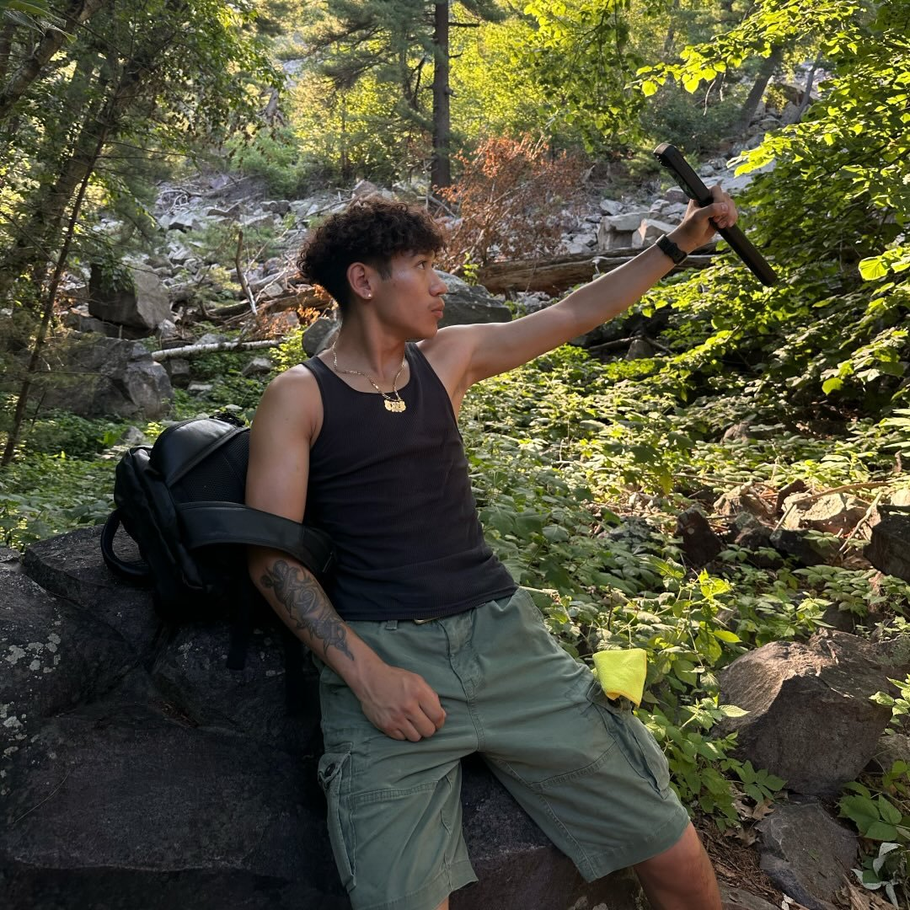

Portfolio
About me
Hey! I'm Jose.
I originally put it together after my Instagram was deleted, because that was where I kept all my photos. I realized it's probably not the best idea to rely on a platform where anyone can remove your posts, so I use this site to host my photos as a backup that anyone can still access.
I live in Chicago, IL, but a lot of the photos here are from the surrounding states— Iowa, Indiana, Michigan, and Wisconsin—for the views, cliffs, caves, and lakes that are close enough to reach and worth going back to.